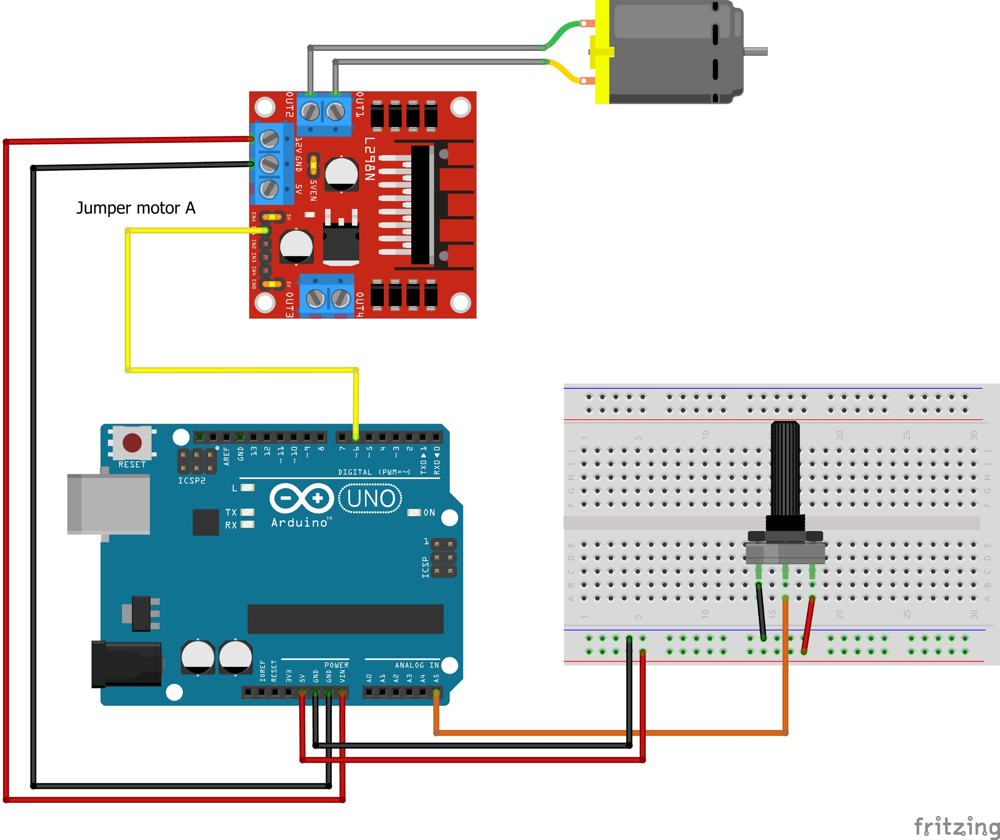
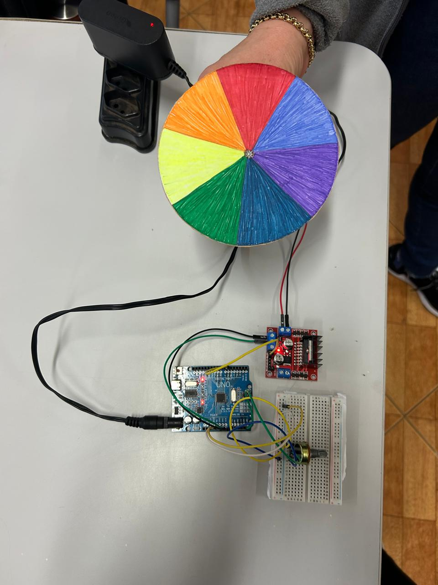
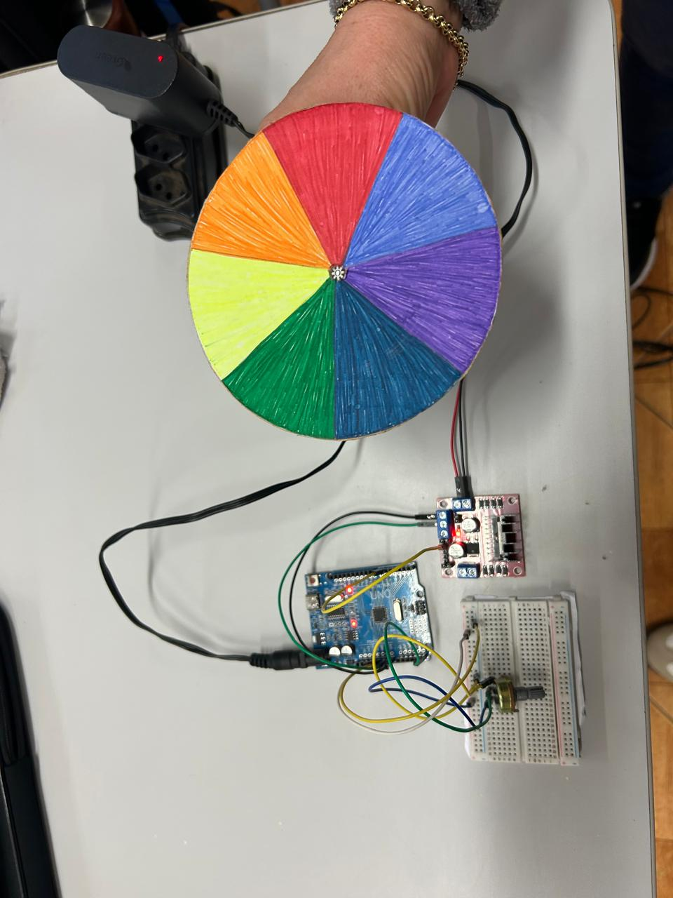
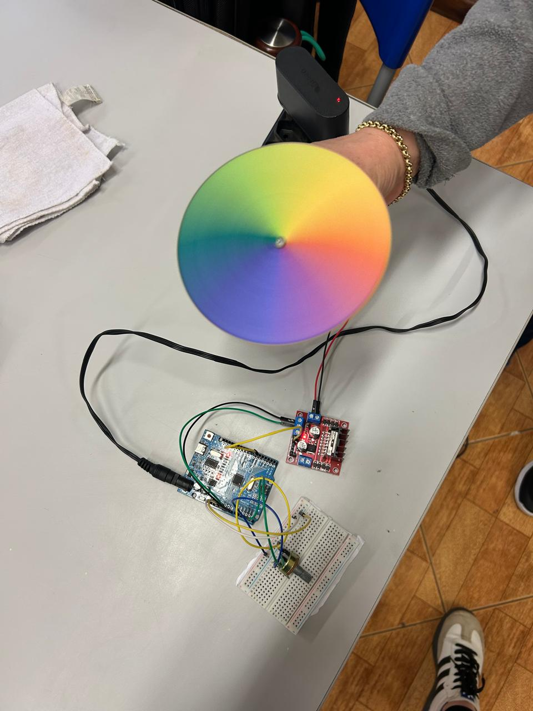

O que é?
Disco de Newton e a persistência da visão
O Disco de Newton é um dispositivo utilizado para demonstrar a composição da luz branca e a forma como as cores do espectro visível se combinam. Seu nome é uma homenagem ao físico e matemático inglês Isaac Newton, que, por meio de experimentos com prismas no século XVII, comprovou que a luz branca do Sol é formada pela mistura de diferentes cores.
O disco é dividido em setores coloridos, normalmente com as sete cores do espectro visível: vermelho, laranja, amarelo, verde, azul, índigo e violeta. Quando está parado, é possível observar cada cor separadamente. No entanto, ao girar em alta velocidade, essas cores se sobrepõem na retina do observador. Devido ao fenômeno da persistência da visão, o cérebro combina as diferentes cores, criando a sensação de que o disco se tornou branco ou acinzentado.
Esse experimento demonstra, de maneira prática, que a luz branca é composta pela combinação de várias cores. Embora o disco não fique perfeitamente branco — devido às características das tintas, da iluminação e da velocidade de rotação — o resultado é suficiente para ilustrar os princípios da mistura das cores da luz e da percepção visual humana.
Além de seu valor científico, o Disco de Newton é amplamente utilizado em atividades educacionais por facilitar a compreensão de conceitos de Óptica. Ele permite visualizar como a luz pode ser decomposta em diferentes cores por um prisma e como essas mesmas cores podem ser recombinadas para formar novamente a luz branca, reforçando uma das descobertas mais importantes de Isaac Newton.
O funcionamento do Disco de Newton também evidencia que a percepção das cores depende não apenas da luz, mas também da forma como o sistema visual humano processa as imagens. A rápida sucessão das cores durante a rotação faz com que o cérebro não consiga distingui-las individualmente, interpretando sua combinação como uma única cor clara.
Dessa forma, o Disco de Newton é um recurso simples, porém muito eficiente para demonstrar os princípios da composição da luz branca, da mistura das cores e da percepção visual. Seu uso em experimentos e atividades didáticas contribui para tornar o aprendizado sobre Óptica mais prático, intuitivo e acessível.
Materiais Utilizados
Arduino UNO
1 Unidade
Protoboard
1 Unidade
Jumpers
8 Unidades
Ponte H
1 Unidade
Potenciômetro
1 Unidade
Motor DC sem redução
1 Unidade
Fonte 9V
1 Unidade
Imagem do Circuito

A imagem acima apresenta a montagem do circuito desenvolvido para este projeto. Nela é possível visualizar a ligação entre o Arduino UNO, a Ponte H, o potenciômetro, o motor DC e os jumpers utilizados para realizar o giro do disco e demonstrar o efeito da persistência da visão.
Códigos Fonte
Disco de Newton
#include <Arduino.h>
#include <Wire.h>
#include <SoftwareSerial.h>
int pinPot = A5;
void _delay(float seconds) {
long endTime = millis() + seconds * 1000;
while(millis() < endTime) _loop();
}
void setup() {
pinMode(6,OUTPUT);
while(1) {
analogWrite(6,map(analogRead(pinPot),0,1023,0,255));
_loop();
}
}
void _loop() {
}
void loop() {
_loop();
}
Vídeo Demonstrativo
Biblioteca de Imagens


